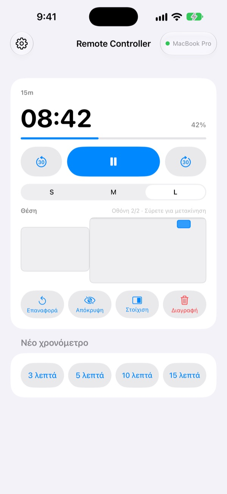
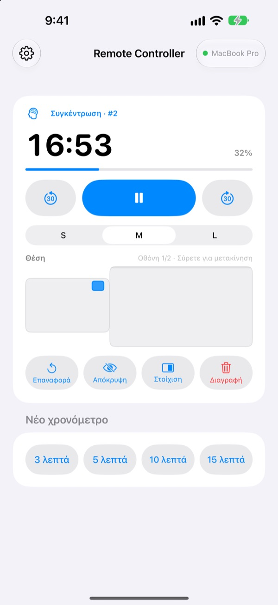
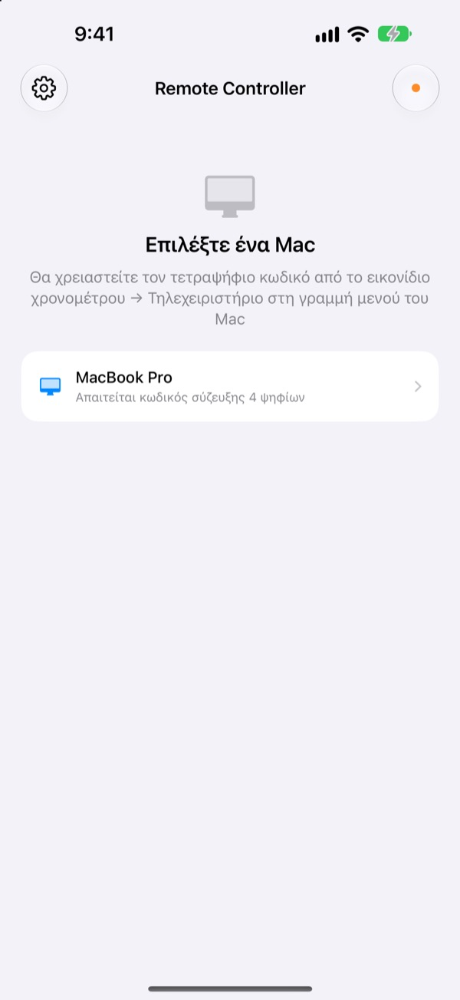

Το Mac μένει πίσω,
το χρονόμετρο στο χέρι σας
Χειριστείτε τα χρονόμετρα του StickyPresenter στο Mac από το iPhone σας. Βγείτε μπροστά στην αίθουσα και συνεχίστε να βλέπετε τον χρόνο που απομένει, να κάνετε παύση, να προσθέτετε 30 δευτερόλεπτα ή να μετακινείτε το χρονόμετρο από το γράφημα που κρύβει.
Δωρεάν · iOS 17 ή νεότερο · Χρειάζεται Mac με ανοιχτό το StickyPresenter στο ίδιο Wi‑Fi.

Ακόμη γυρίζετε στον φορητό για να αγγίξετε το χρονόμετρο;
Η ομιλία τραβάει σε μάκρος και θέλετε περισσότερο χρόνο. Το χρονόμετρο κάθεται ακριβώς πάνω στο καλύτερο γράφημά σας. Μέχρι τώρα αυτό σήμαινε να διασχίσετε τη σκηνή και να πιάσετε την επιφάνεια αφής μπροστά σε όλους. Με το Remote Controller μένετε στη θέση σας και πατάτε μία φορά το iPhone.
Βλέπετε τον χρόνο που απομένει και τον διορθώνετε επιτόπου
Ο χρόνος που απομένει και η πρόοδος ενημερώνονται κάθε δευτερόλεπτο. Σε Pomodoro βλέπετε επίσης αν είναι «Συγκέντρωση» ή «Διάλειμμα» και σε ποιον κύκλο βρίσκεστε.
Τραβάτε σε μάκρος; Προσθέστε 30 δευτερόλεπτα. Τελειώνετε νωρίτερα; Αφαιρέστε 30. Ξεκινήστε νέο χρονόμετρο 3, 5, 10 ή 15 λεπτών με ένα πάτημα και αλλάξτε το widget σε S, M ή L, ώστε να διαβάζεται και από την τελευταία σειρά.

Ο κωδικός μπαίνει μία φορά και τέλος
Ανοίξτε την εφαρμογή και κάθε Mac στο Wi‑Fi σας με ανοιχτό το StickyPresenter εμφανίζεται σε λίστα. Επιλέξτε το δικό σας και πληκτρολογήστε τον τετραψήφιο κωδικό από το εικονίδιο χρονομέτρου ▸ Τηλεχειριστήριο στη γραμμή μενού του Mac.
Από εκεί και πέρα η εφαρμογή συνδέεται μόνη της σε αυτό το Mac κάθε φορά που την ανοίγετε. Χωρίς λογαριασμό, χωρίς διακομιστή: οι δύο συσκευές επικοινωνούν απευθείας στο τοπικό σας δίκτυο.

Έτοιμοι σε τρία βήματα
- 1
Ανοίξτε το StickyPresenter στο Mac
Όταν φαίνεται το εικονίδιο χρονομέτρου στη γραμμή μενού, είστε έτοιμοι. Η εφαρμογή μένει εκεί ακόμη κι αν κλείσετε όλα τα παράθυρα.
- 2
Ανοίξτε την εφαρμογή στο ίδιο Wi‑Fi
Όταν ζητήσει πρόσβαση στο τοπικό δίκτυο, πατήστε «Να επιτρέπεται». Έτσι βρίσκει το Mac σας.
- 3
Επιλέξτε το Mac και βάλτε τον κωδικό
Πληκτρολογήστε τον τετραψήφιο κωδικό σύζευξης από το εικονίδιο χρονομέτρου ▸ Τηλεχειριστήριο στη γραμμή μενού του Mac και ο έλεγχος είναι δικός σας.
Τι κάνετε από το iPhone
- Υπολειπόμενος χρόνος
- Χρόνος που απομένει, πρόοδος, φάση Pomodoro (Συγκέντρωση ή Διάλειμμα) και αριθμός κύκλου, κάθε δευτερόλεπτο
- Έναρξη · Παύση
- Ένα μεγάλο κουμπί στη μέση
- −30 δευτ. · +30 δευτ.
- Τα κουμπιά δεξιά κι αριστερά διορθώνουν αμέσως το χρονόμετρο που τρέχει
- Νέο χρονόμετρο
- 3, 5, 10 ή 15 λεπτά
- Μέγεθος widget
- Το widget σε S, M ή L
- Θέση
- Σύρετε το widget πάνω σε μικρογραφία της διάταξης οθονών του Mac, ακόμη και σε δεύτερη οθόνη
- Απόκρυψη
- Κρύψτε για λίγο το widget από το κοινό
- Στοίχιση
- Φέρτε ένα χαμένο widget δίπλα στο παράθυρο χρονομέτρου
- Επαναφορά · Διαγραφή
- Ξεκινήστε το χρονόμετρο από την αρχή ή διαγράψτε το
- Συντομεύσεις · Siri
- Πείτε
Έναρξη χρονομέτρου με το Remote Controllerκαι στο Mac εμφανίζεται χρονόμετρο
Το τηλεχειριστήριο δουλεύει μόνο με χρονόμετρα που τρέχουν στο Mac. Τα σημειώματα και τα κείμενα του τηλεπροτροπέα δεν στέλνονται ποτέ στο iPhone, και οι διαφάνειες δεν αλλάζουν από εδώ.
Ερωτήσεις
Μπορώ να χρησιμοποιήσω την εφαρμογή iPhone μόνη της;
Όχι. Το Remote Controller είναι το τηλεχειριστήριο του StickyPresenter για Mac, οπότε το StickyPresenter πρέπει να τρέχει σε Mac στο ίδιο Wi‑Fi. Κατεβάστε την εφαρμογή Mac από τον σύνδεσμο παρακάτω ή από το «Λήψη της εφαρμογής για Mac» στις Ρυθμίσεις της εφαρμογής.
Το Mac μου δεν εμφανίζεται στη λίστα.
Αν δεν εμφανιστεί κανένα Mac μέσα σε 10 δευτερόλεπτα, η εφαρμογή δείχνει μια λίστα ελέγχου. Περάστε την από πάνω προς τα κάτω: το StickyPresenter τρέχει στο Mac (φαίνεται το εικονίδιο χρονομέτρου στη γραμμή μενού), οι δύο συσκευές είναι στο ίδιο Wi‑Fi (τα δίκτυα επισκεπτών δεν κάνουν), το Remote Controller είναι ενεργό στο iPhone στις Ρυθμίσεις ▸ Απόρρητο και ασφάλεια ▸ Τοπικό δίκτυο, το StickyPresenter επιτρέπεται στο Mac στις Ρυθμίσεις συστήματος ▸ Απόρρητο και ασφάλεια ▸ Τοπικό δίκτυο, και κάθε VPN είναι απενεργοποιημένο.
Λέει ότι ο κωδικός σύζευξης είναι λάθος.
Πληκτρολογήστε τα τέσσερα ψηφία που εμφανίζονται αυτή τη στιγμή στο εικονίδιο χρονομέτρου ▸ Τηλεχειριστήριο στη γραμμή μενού του Mac. Αν κάποιος πάτησε «Νέος κωδικός σύζευξης» στο Mac, ισχύει μόνο ο νέος κωδικός.
Λέει ότι το Mac δεν αναγνωρίζει αυτό το iPhone.
Συμβαίνει μετά από «Διαγραφή συζευγμένων τηλεχειριστηρίων» στο Mac ή μετά από επανεγκατάσταση του StickyPresenter. Πατήστε το Mac στη λίστα και πληκτρολογήστε ξανά τον κωδικό σύζευξης.
Λέει ότι το Mac δεν απαντά.
Βεβαιωθείτε ότι το Mac δεν είναι σε αδράνεια, ότι οι δύο συσκευές είναι στο ίδιο Wi‑Fi και ότι κάθε VPN είναι απενεργοποιημένο.
Λέει ότι η εφαρμογή στο Mac χρειάζεται ενημέρωση.
Το StickyPresenter στο Mac σας είναι παλαιότερο από το τηλεχειριστήριο. Ενημερώστε το από το Mac App Store και μετά επιλέξτε ξανά το Mac.
Είναι ασφαλές σε μια αίθουσα γεμάτη Mac;
Ναι. Το τηλεχειριστήριο μιλά μόνο με το ένα Mac με το οποίο έχει συζευχθεί, και ένα τηλεχειριστήριο που δεν ξέρει τον κωδικό σας δεν φτάνει στο Mac σας. Όλα ταξιδεύουν μέσω κρυπτογραφημένης, απευθείας σύνδεσης στο ίδιο δίκτυο. Αν έχετε δείξει ποτέ τον κωδικό σε κάποιον, πατήστε «Νέος κωδικός σύζευξης» στο Mac.
Τι στέλνεται στο διαδίκτυο;
Τα χρονόμετρα και οι εντολές σας δεν βγαίνουν ποτέ από το τοπικό δίκτυο. Στο διαδίκτυο στέλνονται μόνο ανώνυμα στατιστικά χρήσης, αναφορές σφαλμάτων και σχόλια που επιλέγετε να στείλετε. Λεπτομέρειες θα βρείτε στην Πολιτική απορρήτου.
Μπορεί το Siri να ξεκινήσει χρονόμετρο λίγο πριν βγω;
Ναι. Πείτε «Έναρξη χρονομέτρου με το Remote Controller» ή χρησιμοποιήστε την ενέργεια «Έναρξη χρονομέτρου στο Mac» στις Συντομεύσεις. Η εφαρμογή ανοίγει και ξεκινά χρονόμετρο με τη διάρκεια που ορίσατε (από 1 έως 600 λεπτά) μόλις συνδεθεί με το Mac σας.
Ερωτήσεις, σφάλματα ή ιδέες; Γράψτε στο mizzking75@gmail.com ή στείλτε τα απευθείας από το iPhone: γρανάζι πάνω αριστερά στην εφαρμογή ▸ «Σχόλια».